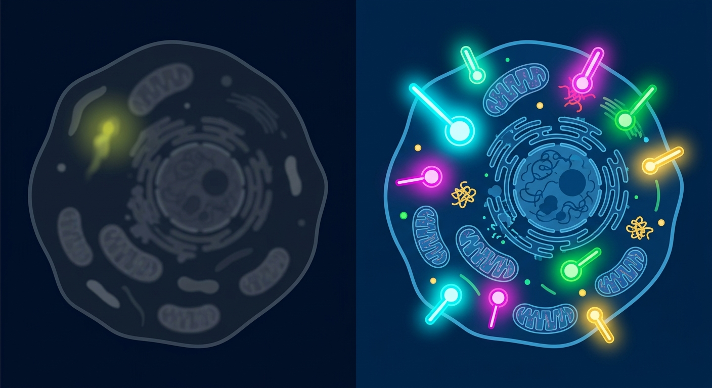

Lighting Up the Dark Matter of Aging: How AI-Designed Molecular Lanterns Are Transforming Cellular Imaging

Imagine trying to repair a complex piece of microscopic machinery in pitch darkness, armed with only a flickering candle. For decades, longevity scientists studying cellular senescence, organelle decline, and protein misfolding have faced a similar dilemma. Traditional fluorescent proteins—while revolutionary for their time—frequently bleach under intense laser light, dim rapidly, and overlap in optical spectrums. This limits researchers to observing just one or two biological processes at a time, obscuring the intricate, multi-system dance of aging inside human cells. Now, a team of computational biologists has used generative AI to build a novel toolkit of custom molecular lanterns, capable of illuminating the deepest recesses of living cells in high-definition across three distinct color channels.
Using advanced deep learning algorithms, the researchers designed entirely novel, de novo proteins crafted specifically to grip three bright, photostable, and cell-permeable synthetic fluorophores: far-red (JF657), orange-red (JF596), and green (JF494). Unlike conventional green fluorescent protein derivatives, these Janelia Fluor dyes provide exceptional signal longevity and clarity. By generating binder proteins tailored specifically to hold each dye with tight, nanomolar affinity—a architecture validated by X-ray crystallography—the team built a highly specific, orthogonal tag system. To supercharge the toolkit, they engineered active sites capable of covalent chemical binding and developed "split" protein variants that light up only when two target molecules dock together, allowing real-time tracking of protein-protein interactions within live mammalian cells.
For the longevity field, where multi-factorial diseases dominate, this breakthrough represents a massive upgrade in phenotyping capability. Aging is rarely a story of a single rogue gene; it is a synchronized cascade where lysosomal dysfunction, mitochondrial decay, and senescent signaling happen in tandem. With this AI-designed tri-color system, researchers can simultaneously tag distinct organelles—such as the nucleus, mitochondria, and lysosomes—and watch how experimental senolytics or gene therapies restore youthful architecture in living tissues under extreme microscopic scrutiny.
However, translating this computational triumph into real-world anti-aging medicine requires a healthy dose of realism. While synthetic dyes offer superior optical properties, relying on exogenous small-molecule dyes introduces significant drug delivery challenges: ensuring uniform bio-distribution, avoiding cellular toxicity, and overcoming metabolic clearance in whole organisms remain major hurdles that native fluorescent proteins do not face. Furthermore, expressing non-natural, de novo computational proteins in mammalian tissue risks triggering immune responses if deployed for in vivo diagnostic imaging. Until scientists solve deep-tissue fluorophore delivery and verify long-term immunological safety, this powerful imaging suite will remain a transformative platform for benchtop drug screening and cell culture assays rather than a direct clinical tool.
Insights from Longevity KG: Dissecting complex longevity pathways—such as how lysosomal dysfunction triggers cellular senescence or how precision therapeutics mitigate cognitive decline and brain shrinkage in neurodegenerative models—requires real-time, ultra-high-resolution intracellular tracking. By providing non-overlapping, multi-color synthetic dye tags, this computational platform allows researchers to simultaneously monitor organelle breakdown, immunosenescent signaling, and therapeutic response in human models of aging with unprecedented fidelity.
Sources & Citations:
Primary Source: Design of Orthogonal Far-Red, Orange and Green Fluorophore-binding Proteins for Multiplex Imaging (bioRxiv)
- Design of Orthogonal Far-Red, Orange and Green Fluorophore-binding Proteins for Multiplex Imaging. bioRxiv (2025). https://doi.org/10.1101/2025.08.03.668343